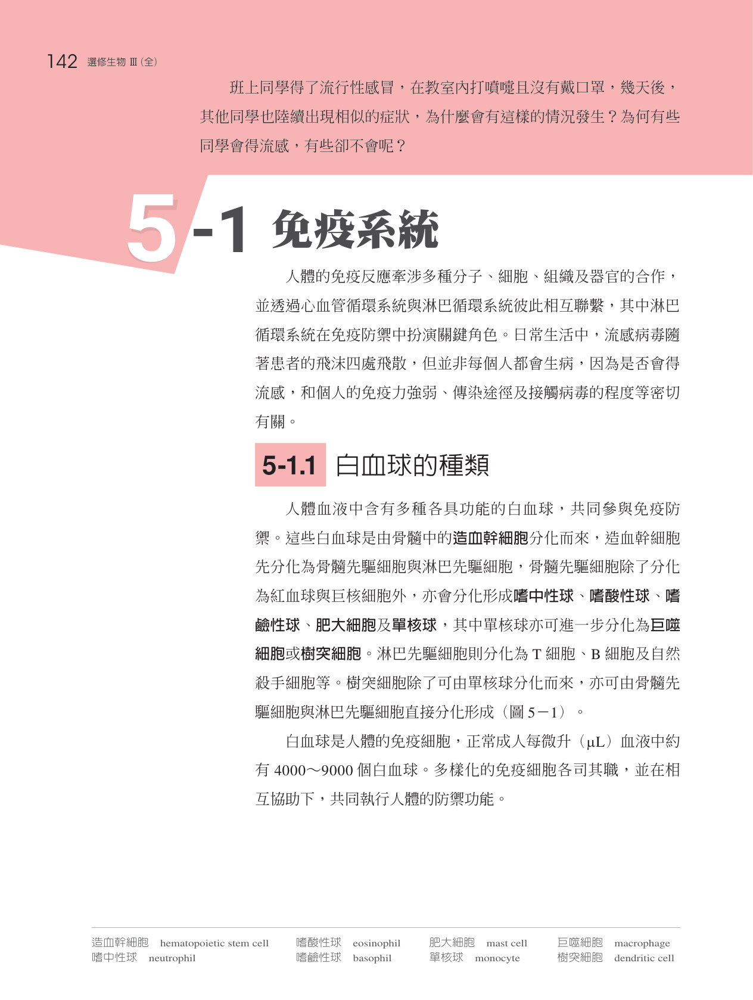
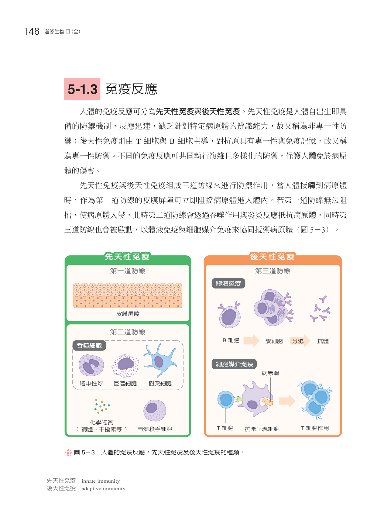
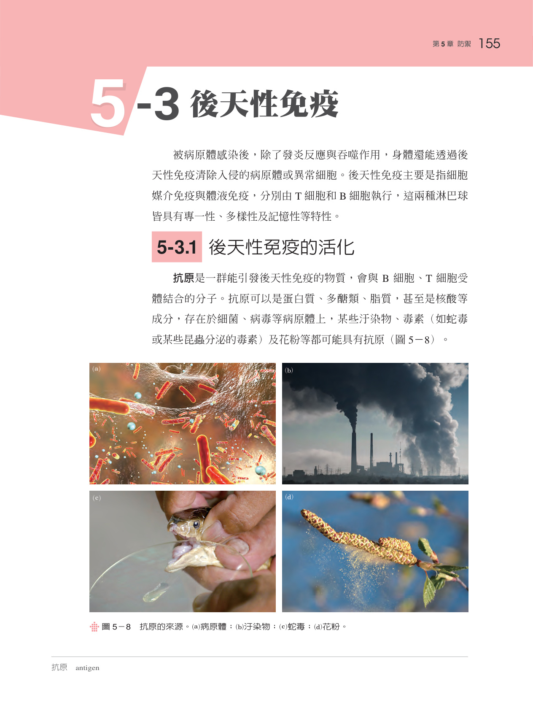
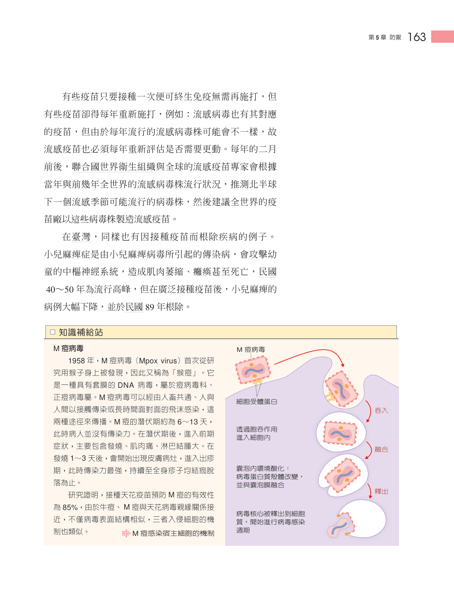
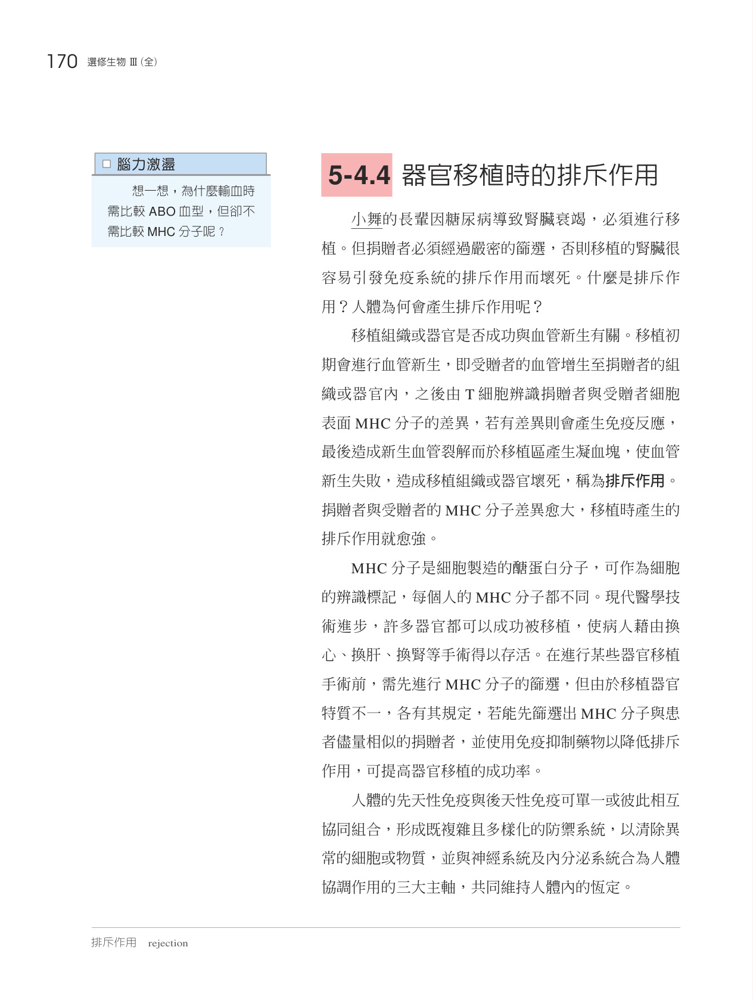

建立人體三道防線知識體系，從皮膜物理化學屏障、發炎反應，到 B 細胞抗體免疫與 T 細胞細胞介導免疫之特異性防禦機制。

認識淋巴器官（骨髓、胸腺、脾臟、淋巴結）與各類白血球細胞的生成分化與免疫監視網絡。

剖析皮膜屏障、吞噬細胞吞噬作用、自然殺手細胞、補體系統活化與發炎反應紅腫熱痛機制。

深入抗原呈現細胞 (APC)、輔助 T 細胞、胞毒 T 細胞、B 細胞漿細胞抗體分泌及免疫記憶機制。

探討過敏反應 (IgE)、自體免疫疾病、後天免疫缺乏症候群 (HIV/AIDS) 及器官移植排斥。

運用抗 A / 抗 B 標準血清模擬鑑定紅血球表面凝集原與血清凝集素之特異性抗原抗體結合反應。